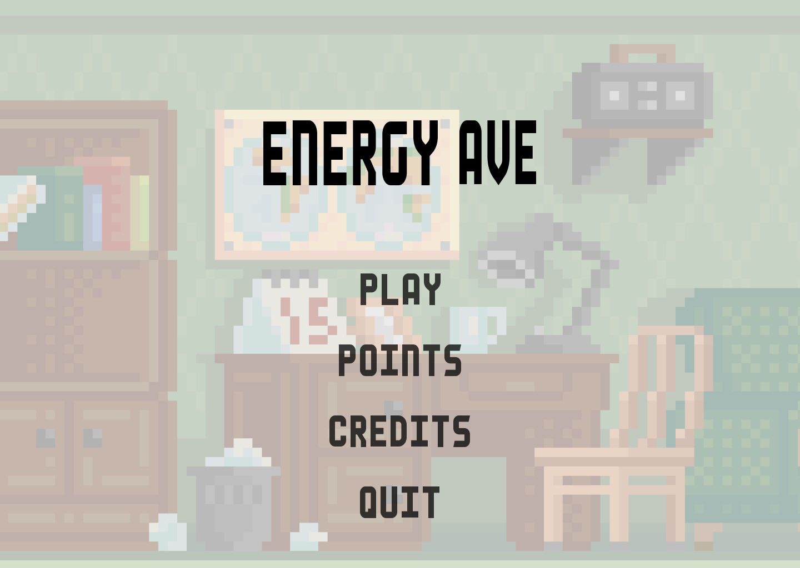
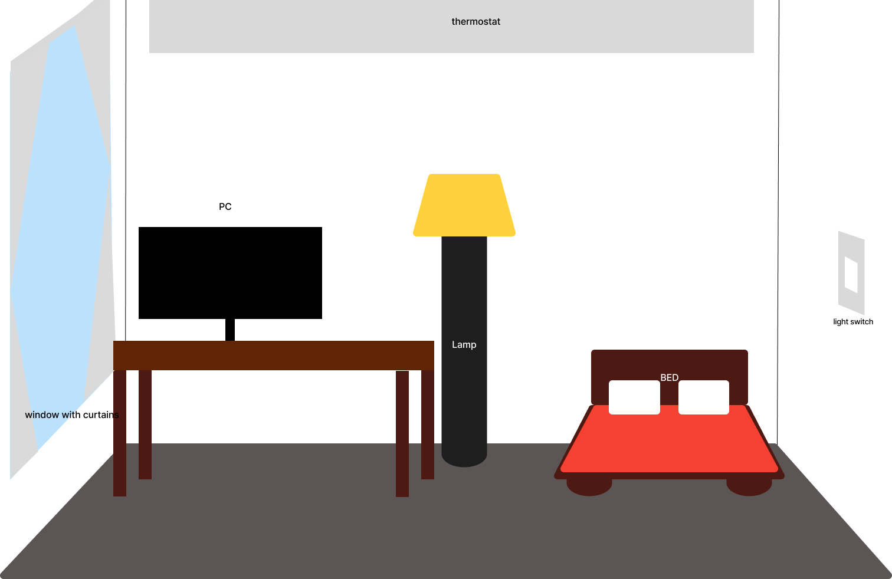
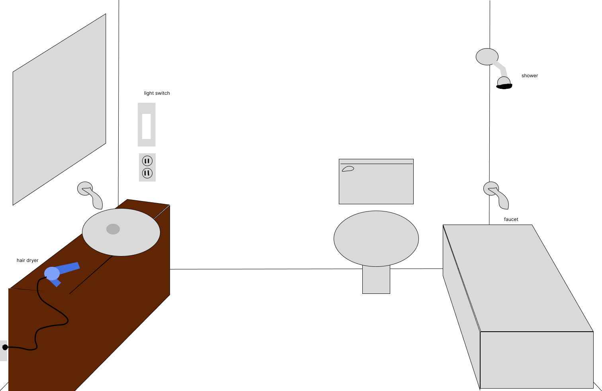
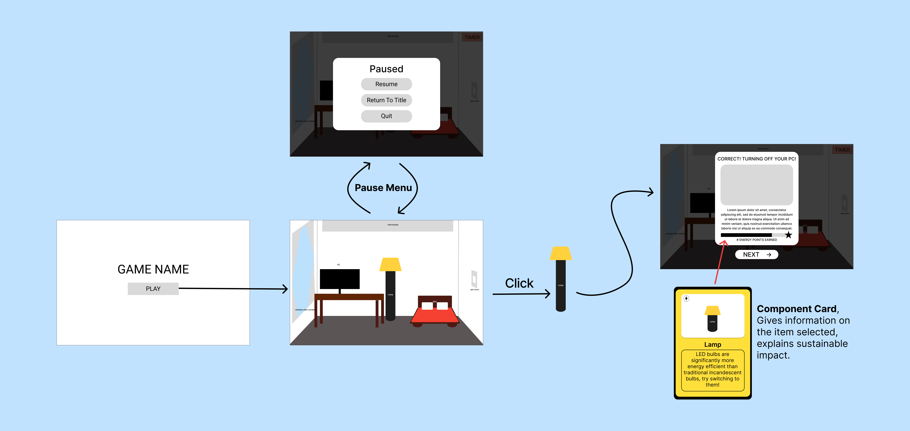
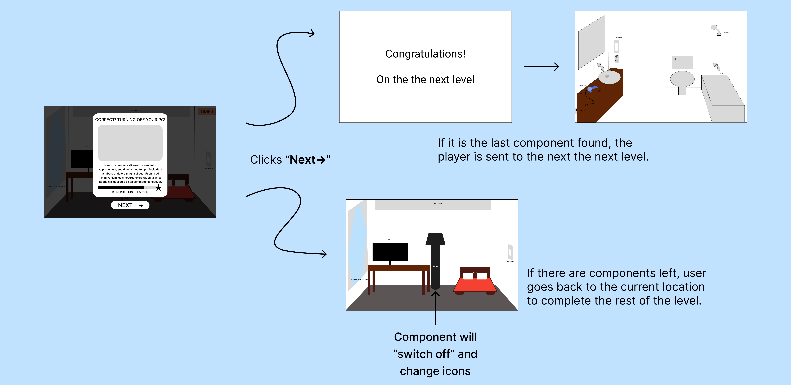
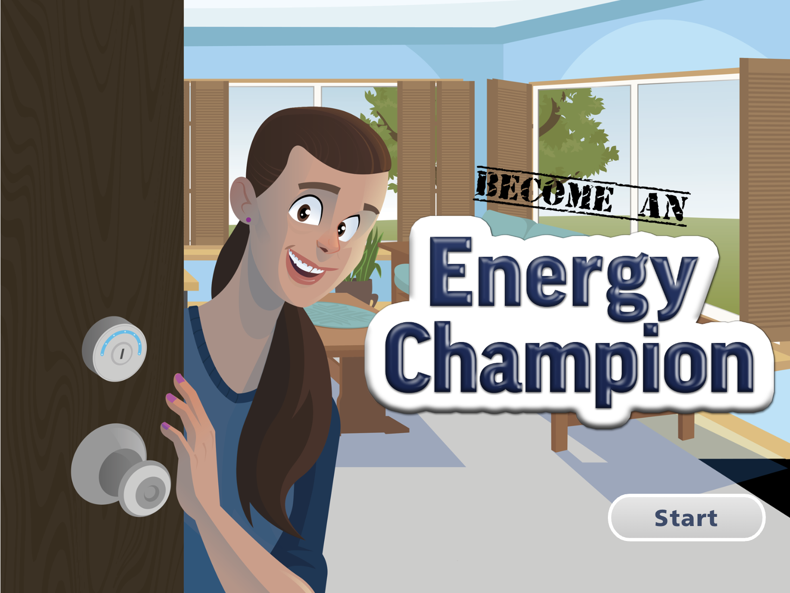
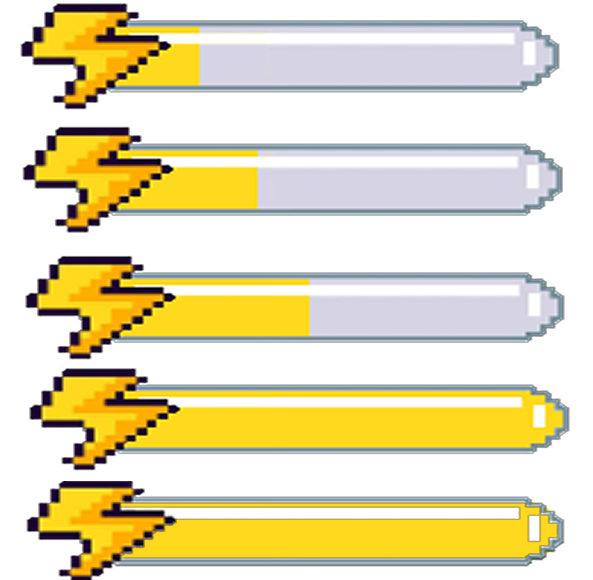
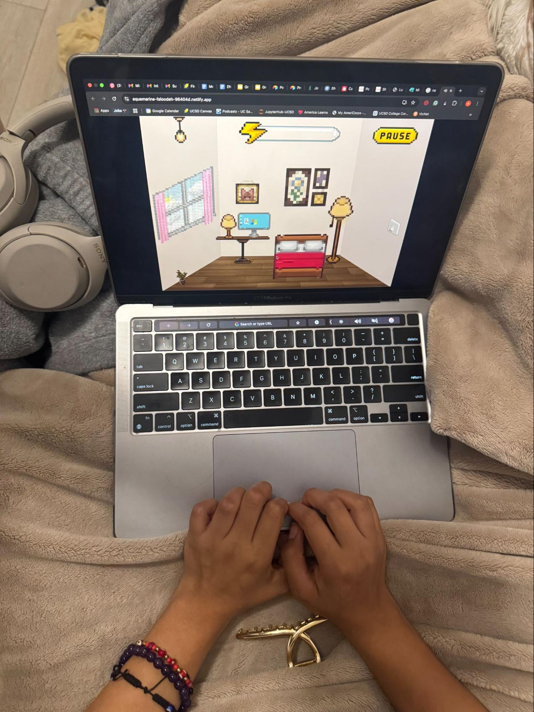

Energy Ave.
Designing a gamified energy conservation experience for PlanetFlip — research-backed, fully playable, and built in 10 weeks.
01 — The Problem
Sustainability education leans on information delivery, not interactive engagement. Younger users already know it matters — they need a tool that turns awareness into habit.
PlanetFlip had concepts but nothing built or validated. We designed a fully playable, research-backed game from scratch: educationally grounded, usable without instruction, and engaging enough to hold attention.
What is Energy Ave?

Players navigate a virtual home — bedroom, bathroom, kitchen — clicking on items in each space.
Tap household appliances and electronics to identify and correct energy-wasting behaviors.
Each interaction triggers a real-world energy fact card. Earn points, fill the meter, unlock the next room.
02 — Research Goals & Questions
| Research Question | Research Goal |
|---|---|
| RQ1. What patterns in existing sustainability games drive or kill engagement? | Understand what makes existing sustainability games succeed or fail at engaging users. |
| RQ2. Which concept best meets the needs of our target users and client? | Identify which concept best balances educational impact, usability, feasibility, and engagement. |
| RQ3. Can users understand how to play without a tutorial? | Validate whether the interaction model is intuitive without explicit instruction. |
| RQ4. Does the game motivate players to apply energy-saving habits in real life? | Evaluate whether the game teaches, engages, and motivates real-world behavior change. |
Success Metrics — Defined Upfront
| Metric | Method | Target |
|---|---|---|
| User Engagement | Session Timing | ≥ 10 min/session |
| Task Success Rate | Usability Testing | ≥ 85% |
| Knowledge Improvement | Pre/Post Survey | ≥ 75% of users improve |
| Development Feasibility | Timeline Tracking | ≤ 3 months |
| Device Accessibility | Technical Testing | Mobile & desktop |
03 — Methodology
Audited 4 gamified sustainability tools to map the landscape and identify the gap.
PlanetFlip, SD Climate Collaborative & Cabrillo NPS — 3 orgs, 3 perspectives.
Affordance test + cognitive walkthrough on static wireframes before any code was written.
Full gameplay observation + 7-question post-task attitudinal survey.
04 — Competitive Analysis

Closed captioning, multi-level progression, high-quality visuals.
Levels too long, no penalties for inaction, low urgency — no time constraints.

Good educational content, character customization.
Highly repetitive mini-games, hard to navigate, no accessibility features.
Location-based mini-games, strong loading screen.
Repetitive tasks, thin sustainability info, dead end after completion.
Penalizes unsustainable choices, avatar customization.
Requires account to access, slow pacing, too complex for younger users.
Who was served — and who wasn't
K–6 was well-served. Older students and adults were underserved — Financial Freedom had the right complexity but locked content behind accounts. Our opportunity: a game for elementary-to-middle school: tight interactive learning, short engaging loops, no account required.
05 — Stakeholder Interviews
- Past teams designed concepts but never implemented them.
- Community engagement and scalability were top priorities.
- Workplaces increasingly need sustainability training.
- Surfaced a workplace use case beyond our K–12 focus.
- Local orgs need accessible engagement tools.
- Validated public institution use case.
Concept Feedback
| Category | What Stakeholders Said |
|---|---|
| Liked | Life-sim aesthetic, real-world integration. "Cozy" feel similar to Animal Crossing and Stardew Valley. |
| Wished | More critical thinking, community-building, and customization options. |
| Questions | Multiple paths? Consequences for wrong choices? Single sustainability theme? |
| Ideas | Character customization, virtual pets, community gardening, water conservation, clothing recycling. |
06 — Choosing a Concept
07 — Study 1 · Formative Testing
Method

A clickability/affordance test (what looks interactive?) plus a cognitive walkthrough of static wireframes (can users reconstruct the logic unaided?). Catching affordance problems pre-build is far cheaper than post-build — we validated the core interaction model before committing any engineering time.
Participants (n=3)
Two UCSD seniors and one 13-year-old 8th grader.
Part 1 — Affordance Test Results
Participants circled elements they believed were interactive. Coded as hit, miss, or false positive.


Part 2 — Cognitive Walkthrough


All three participants reconstructed the game's logic without instruction. Cody moved through the flow fluently; Paul had a self-correcting "aha moment" that actually confirmed the game's internal logic — only electricity-conducting items should be clickable. Preesha, the closest to the target age group, read it as a "storyline through a household," correctly predicted the pop-ups, and praised the 8-bit aesthetic unprompted.
- Increase visual affordance for thermostat & window — add glow or animation cue.
- Reduce visual weight of the bed — consistently selected as interactive despite being passive.
- Fix energy bar update logic (Preesha flagged it was not updating correctly).
- Implement the timer — pause button appeared non-functional to participants.
08 — Study 2 · Summative Testing
Method
Participants played the full game, then took a 7-question post-task survey. Behavioral data + self-reported experience. Observation shows what users do; surveys show how they feel — for a voluntary, intrinsically motivated product, both matter.
Participants (n=7)
Seven college-aged participants across UCSD disciplines plus client Ron Kagan, with gaming experience ranging from little to none to above average.
Results vs. Success Metrics
Qualitative Themes
All seven praised the visuals and audio. Descriptors: "cute," "chill," "relaxing," "immersive." Unprompted comparisons to early-2000s browser games and indie titles — a real differentiator in a sterile category.
The clearest criticism: lack of challenge. Interactables were too easy to spot; Ron Kagan noted it felt aimed at elementary schoolers. The pattern was strong enough to require iteration.
Kagan flagged that points should be numerically visible and items should flash on click. Alessandra noted the energy bar should reflect cumulative value. The most actionable feedback of the round.
Not immediately clear the back button was what added points to the score — needed explicit UI surfacing.
09 — Synthesis & Affinity Themes
- All participants reconstructed game logic without instruction.
- Flow was self-evident across all experience levels.
- Internal logic was intuitive (electric-only items).
- Emotional payoff of earning points was weak for many users.
- High completion ≠ high motivation — a critical gap.
- Feedback loop needed to be faster and more visible.
- Unanimous praise for pixel-art visual direction.
- Audio design called out unprompted by all 7 participants.
- Comparisons to Stardew Valley, Unpacking, Barbie.com.
10 — Key Insights
The interaction model works. The reward model doesn't — yet.
Users played without instruction — the interaction design works. But the emotional payoff didn't land. Clear ≠ satisfying — different problems, different solutions.
The aesthetic direction is a genuine competitive advantage.
Every participant praised the visuals and audio — unanimous in a category of sterile educational games. Worth protecting in every iteration.
The target audience wasn't fully represented in testing.
Both rounds skewed to UCSD undergrads. Only Preesha, 13, was near the target demo. A round with 8–12 year olds would likely surface different friction.
11 — Impact on Design
- 1Point VisibilityPoint values made numerically visible on each interaction card.
- 2Click AnimationItems flash visually on click — confirms the interaction registered.
- 3Audio FeedbackSound cues added to item interactions for tactile feel.
- 4Energy Bar FixEnergy bar updated to show running total, not just points just added.
- 5Back Button ClarityBack button behavior made more visually explicit in the UI.


Broader Outcomes
12 — Reflection

What Went Well
The two-study structure was the most valuable methodological choice. Splitting formative (wireframes) from summative (build) caught affordance problems before they were built in.
Mixed methods — observation + survey — gave a richer picture than either alone. The gap between completion and satisfaction was where the most interesting design work lived.
What I'd Do Differently
The biggest gap was participant representation — both studies skewed to UCSD undergrads. A study with 8–12 year olds would've surfaced different friction: reading level, attention span, comprehension.
I'd also push for a longitudinal component — a follow-up 1–2 weeks post-play to measure whether energy-saving behaviors stuck at home. The more important, still-unanswered question.
End of case study · Energy Ave / PlanetFlip · 2025